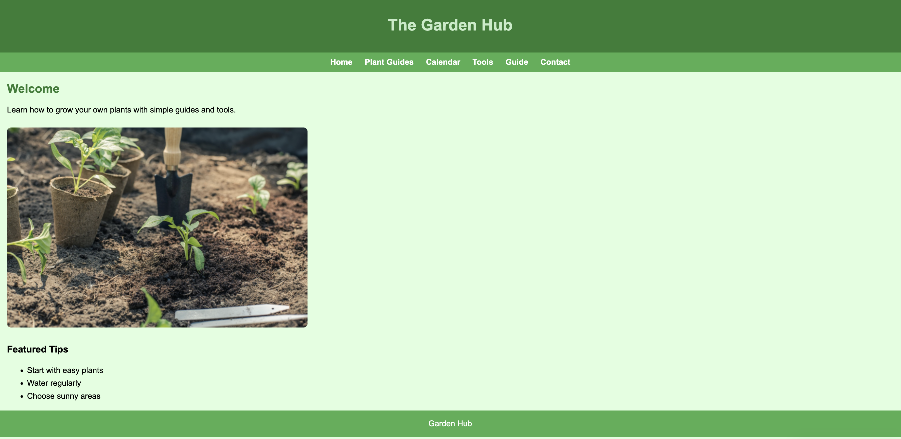

Student Evaluated
Chernoivan, Sasha

Evaluation (Checklist + Feedback)
- Submission: The link leads directly to the correct page being reviewed.
- File Naming: File and folder names appear consistent and appropriate with no visible issues.
- Design - Readability: The page is readable overall, but some text sections could benefit from increased spacing and slightly larger font sizes.
- Design - Colors & Fonts: Colors and fonts are mostly consistent, though improving contrast in some areas would enhance accessibility.
- CRAP Principles:
- • Contrast: Some contrast is present, but certain elements could stand out more.
- • Repetition: Design elements are fairly consistent across the page.
- • Alignment: Content is mostly aligned well and visually organized.
- • Proximity: Related items are grouped, though spacing could be improved in some sections.
- Page Structure: The page includes a header, main section, and footer.
- Header: A header is present and includes navigation.
- Main Content: The main section clearly presents the purpose of the site.
- Footer: A footer exists, but could include more useful information.
- Navigation: Navigation is present and functional.
- Main Starts with h2: The structure mostly follows proper heading hierarchy.
- Branding / Tagline: The site has some identity, but a stronger tagline could improve branding.
- Validation: No validation tools are visible; adding validation would improve quality.
- Overall Requirements: The project meets most of the requirements for this stage.
- Suggestions:
- • Improve spacing between sections for better readability
- • Increase contrast in certain areas
- • Add more detailed content to strengthen the site
- • Enhance footer with more useful information
- Stop, Start, Continue:
- • Stop: Avoid overcrowding sections with too much text
- • Start: Improving visual hierarchy and spacing
- • Continue: Maintaining a clear structure and navigation
- Overall: This is a solid project with a good structure and clear direction. With a few improvements, it can become more polished and user-friendly.